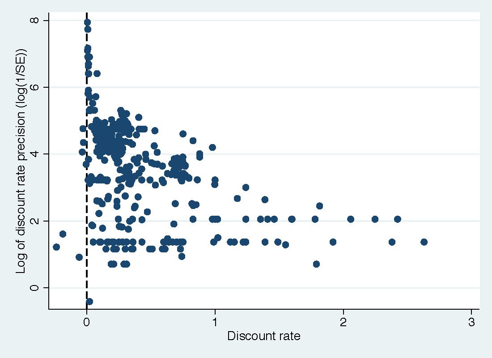

Abstract
A key parameter estimated by lab and field experiments in economics is the individual discount rate---and the results vary widely. We examine the extent to which this variance can be attributed to observable differences in methods, subject pools, and potential publication bias. To address the model uncertainty inherent to such an exercise, we employ Bayesian and frequentist model averaging. We obtain evidence consistent with publication bias against unintuitive results. The corrected mean annual discount rate is 0.33. Our findings also suggest that discount rates are independent across domains: people tend to be less patient when health is at stake compared to money. Negative framing is associated with more patience. Finally, the results of lab and field experiments differ systematically, and it also matters whether the experiment relies on students or uses broader samples of the population.
Fig: The funnel plot suggests publication bias in the literature
Reference: Jindrich Matousek, Tomas Havranek, and Zuzana Irsova (2022), "Individual Discount Rates: A Meta-Analysis of Experimental Evidence." Experimental Economics 25(1), 318-358.